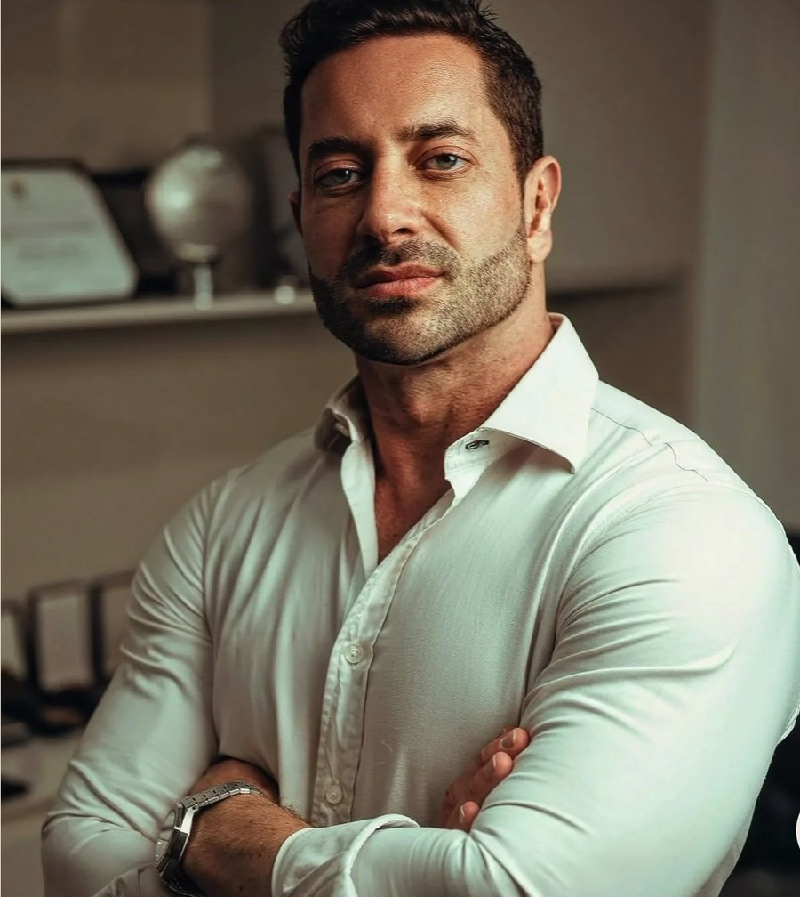
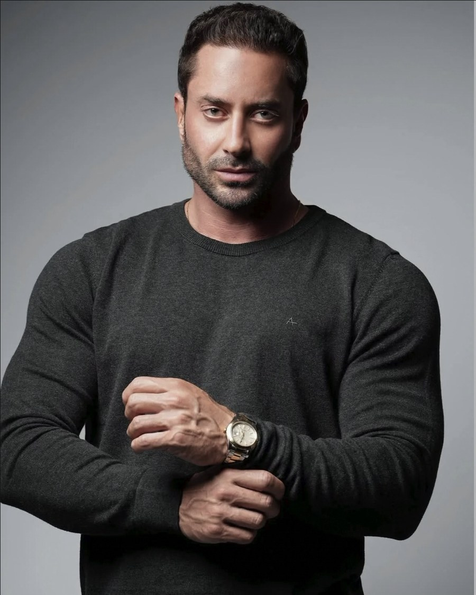
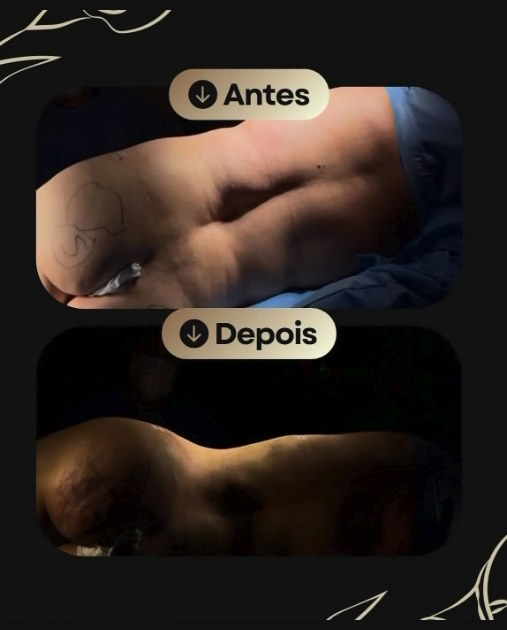
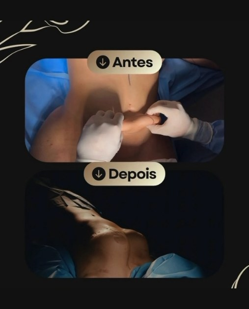
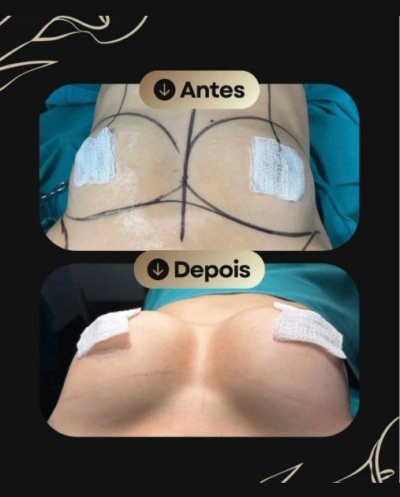
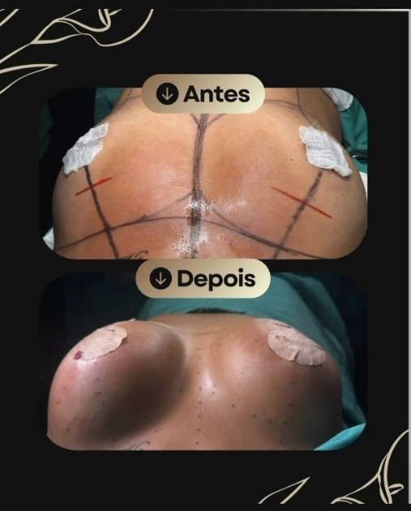

Cuidar do corpo é também cuidar da alma.
Técnica, personalização e acolhimento em uma jornada individual de cuidado, autoestima e bem-estar.

“Meu método de contorno corporal une técnica, personalização e acolhimento para trazer sua autoestima de volta à vida.”
Uma abordagem fundamentada em conhecimento, planejamento e cuidado médico individualizado.
Cada paciente possui características, expectativas e necessidades próprias.
Uma jornada de cuidado baseada em escuta, transparência e atenção individual.
Dr. Rodrigo Nelson é cirurgião plástico em Belo Horizonte, com atuação dedicada às cirurgias de mama e ao contorno corporal. Seu trabalho parte da escuta atenta e de um planejamento individual, respeitando as características, a saúde e as expectativas de cada paciente.

Conheça as possibilidades de tratamento e as abordagens utilizadas na cirurgia plástica. A indicação de cada procedimento é sempre definida em consulta.
Procedimento que utiliza implantes para ajustar volume e projeção das mamas, planejado de acordo com a anatomia e o desejo de cada paciente.
Agendar avaliação ↗Reposiciona e remodela as mamas, tratando a flacidez e a ptose. Pode ser associada ou não ao uso de implantes, conforme avaliação.
Agendar avaliação ↗Abordagens para harmonizar forma e proporção das mamas, definidas individualmente após consulta médica.
Agendar avaliação ↗Remoção de gordura localizada em áreas específicas, buscando melhor harmonia do contorno. Não é um tratamento para perda de peso.
Agendar avaliação ↗Associa a retirada e, quando indicado, o reaproveitamento de gordura para redesenhar proporções do corpo.
Agendar avaliação ↗Técnica de lipoaspiração que trabalha a definição de relevos anatômicos, indicada para perfis específicos de paciente.
Agendar avaliação ↗Trata excesso de pele e flacidez abdominal e, quando necessário, a diástase dos músculos, comum após gestações ou emagrecimento.
Agendar avaliação ↗Abordagem de enxertia de gordura utilizada para refinar volumes e contornos, com indicação definida conforme a avaliação de cada caso.
Tecnologia de plasma de argônio utilizada como recurso complementar no tratamento da flacidez de pele em procedimentos de contorno.
Abordagem empregada no planejamento do contorno corporal, aplicada de forma individualizada após avaliação médica.
Técnica voltada à harmonização da região da cintura, indicada apenas para perfis específicos e após criteriosa avaliação.
Nomenclaturas e descrições sujeitas à confirmação médica. Nenhuma técnica é indicada para todos os pacientes.
Conheça registros de casos selecionados e entenda as possibilidades de cada abordagem.

Contorno corporalContorno corporal — região dorsal e flancos
Contorno corporalContorno corporal — lipoescultura
MamasCirurgia de mama — registro intraoperatório
MamasCirurgia de mama — registro intraoperatórioImagens reais de pacientes, divulgadas com autorização e finalidade exclusivamente educativa, em conformidade com as normas do Conselho Federal de Medicina (CFM). Os resultados variam conforme as características individuais de cada paciente e não representam garantia de resultado.
Em breve, relatos reais de pacientes que confiaram sua jornada ao Dr. Rodrigo Nelson.
Acompanhe no Instagram ↗